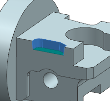
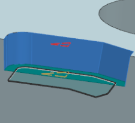
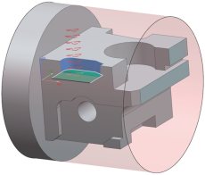
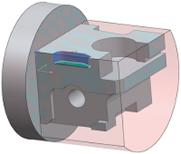

底面和壁铣削毛坯控制
创建底面和壁以及带 IPW 的底面和壁工序时，可以使用以下三个选项之一来定义毛坯输出。
-
毛坯几何体选项使用工件几何体组中定义的毛坯
-
3D IPW 选项使用同一几何体组中由先前工序使用的 3D IPW 几何体
-
如果部件中未定义毛坯材料，则通过厚度选项可指定一个适用于底面和壁的毛坯厚度值
|
 切削区域 |
 毛坯 = 厚度 壁毛坯厚度已应用 |
|
 毛坯 = 毛坯几何体 |
 毛坯 = 3D IPW |
位于何处？
|
应用模块 |
加工 |
|
对话框中的位置 |
底面壁对话框或底面壁 IPW 对话框→刀轨设置组→切削参数 |